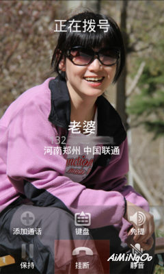
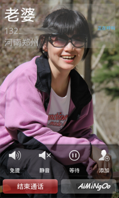

本文分三篇。本篇重在介绍“全屏来电大头贴”的问题，想直接切入技术细节的请径直前往篇二：Android玩乐系列：修改汇编代码支持原生高清来电大头贴（二）
1、Android手机中的来电大头贴
来电大头贴其实包括来电去电两种状态，只是通常都称作“来电大头贴”。这个功能有三种实现方法，包括：
- A：使用第三方的软件，在来去电时显示出大头贴遮盖在原生的拔号面板上面；
- B：少数开发商提供的ROM中，集成了带大头贴功能的拔号面板软件；
- C：在现有的ROM的拔号面板中，原生支持大头贴功能。
首先谈谈为什么大头贴支持起来这么难。这是因为在Android原生系统中，联系人头像大小的标准是96x96，强制是正方形的。这个标准的一部分原因是：Android的手机联系人与Google联系人支持同步，而Google的在线联系人就是这个标准。
一些情况下，可以在手机的联系人中存储高画质的联系的，但是一旦该帐户与Google帐户同步，则联系人的头像品质立即就下降了。这一问题是Google整体的机制导致的，我们这里不谈。所以，也必须先强调，本文中讨论的“高画质来电大头贴”可能会受到Android手机上的Google帐户同步的影响，建议关掉同步功能。
因为这一标准的缘故，所以Android手机中的“联系人”功能在设置头像时，打开的剪切框都是正方形的，而且保存到联系人数据库中时，图片也会自动降低品质。显然，缘于这些因素，要实现“全屏来电大头贴”就必须绕开原生的联系人和拨号面板工具。
这里补充一点，在Android中，“联系人”是指Contacts.apk，而“拨号面板”是指的Phone.apk。两者一般是相互独立的，可以各自更换。但由于它们事实上都使用较特殊的签名并且直接依赖ROM中的framework，所以不同ROM之间很难做到通用。
2、不同实现方案的思路
上面提到过三种方案，这里再进一步地详细解释一下。
首先，A方案是最常见的。在谷歌市场中就能搜索出一大堆。例如：
- 来电全屏大头贴:Full Screen Caller ID
- HD Caller ID Pro高清来电
- BIG! caller ID来电大头贴
- 视频来电大头贴:Video Caller Id
- UltimateCallScreen_HD
等等。如前所述的，这类软件自带一个联系人管理的功能，用于设定“哪些人需要显示大头贴”。一般来说，考虑到一致性的体验，对于“未设置大头贴”人则显示默认的大头贴。
由于A方案本质上是通过“遮盖在原生的拔号面板”来实现的，所以它实际上天生存在两个问题。其一，它总是比原生的拔号面板弹出来得要晚一点，操作过程相当不流畅；其二，由于它遮盖了原来的拨号面板，所以它必须自己再实现一个“接听”界面。这后者，其实又催生了另外一种市场：各种大头贴软件都提供自己的接听界面Theme，电子市场也因此一度火爆。
最后，一般来说，大头贴软件的通话功能并没有原生的拔号面板完整，所以也就通常会提供一个“一键切换到原生面板”的功能。总而言之，A方案基本上就是在原来的拨号面板上做一层皮，揭开了或是没遮好的时候，都会不那么“好看”。
然而B方案呢？却实在不常见，因为只有少数ROM生产商有能力提供在Phone.apk上面的开发。我目前注意到的有：
- Lewa OS采用了将联系人、短信和通话管理功能集成在一个PIM.apk中的方案，并基于此而实现了大头贴功能；
- Miui手机在联系人管理中集成了大头贴管理，并在拔号面板上实现了大头贴显示。
总的来说，要在拔号面板上动手脚风险还是挺大的，并且如果要动这个手脚，还得提供一整套的通话功能。综合上面观察，B方案通常都被实现为一个折衷方案：
- B1：在Contacts.apk中集成一个联系人功能，方便用户为联系人设定（或不设定）大头贴；
- B2：当Phone.apk检测到呼入时，如果在B1功能中设定了大头贴，则在通话界面背景中显示大头贴。
显然这涉及到Android手机功能的两个重要功能的改动，这也是“只有少数ROM生产商”在做的原因。
那么B方案有什么问题呢？也有两点。其一，通常会在系统的联系人之外独立实现大头贴的管理功能，亦即是联系人头像是一个，放在Android系统的内部数据库中，而大头贴又是另外一个，放在单独的图片文件夹中；其二，这些ROM中的大头贴功能无法通用，依赖相应ROM中大量改动过的framework。
第三种方案：基于原生拔号面板（以及联系人）功能来实现“全屏、高画质大头贴”，是我们接下来要讨论的。它主要的目的就是通过极少的代价，使得ROM发烧友可以快速地集成一些“有大头贴功能的”拨号面板到自己喜欢的ROM中去。
3、基础
首先，我们要知道“系统内置的联系人数据库”其实是可以存放高画质的头像的，只是当联系人与Google联系人同步时才会导致这些头像被自动降低品质。此其一。其二，内置数据的存取接口并没有要求联系人头像必须是正方形，而只是联系人软件（Contacts.apk）实现的联系人编辑功能在指定头像时，强调地要求选框为正方形而已！
好的，有了这两个前提，我们就来找找能“给联系人添加高清头像”功能的软件。电子市场中其实确实有两款这样的好货，而且名字还很相近：
- HD Contacts
- HD Contact Photos（或ContactPhotosUpdater)
后者有两个名字，ContactPhotosUpdater这个名字是在xda论坛中使用的，作者也主要是在xda中发布和更新这个软件。
这两个软件使用起来还是有一些问题的。但，就目前我们要做的事情来说，后者（HD Contact Photos）基本能满足要求。它提供一个独立的头像管理功能，尽管这些头像也被保存在磁盘目录中，但只要你“同步”一下，那么这些头像都到系统库中去了，而原始目录中的删除掉也没关系。——当然，建议你还是留下来，做个备份也不错。
有了HD Contact Photos这个软件，“向系统库中写大头贴”就算（暂时地）解决了，我们后面主要讨论“如何在通话面板中显示大头贴”的问题。而在此之前，我先对这两款“写大头贴”的软件作些备注：
- 两款软件功能和界面都比较接近，但后者（HD Contact Photos）完整得多。
- 前者（HD Contacts）不能用于ICS，并且它有个BUG：联系人必须先设置一个头像，才能“修改成”大头像。
- 两个软件都只能将头像设置成正方形，前者（HD Contacts）要修正起来很麻烦，后者比较容易。
- 后者（HD Contact Photos)其实有限制图片大小，但修正起来比较容易。
所以事实上本文中也会提供一个后者（HD Contact Photos)的修改版本，否则仍然达不到我们的目的。
附件
先贴两个修改效果：
【点心vv-ice定制版本】

【Lezo定制版本】
